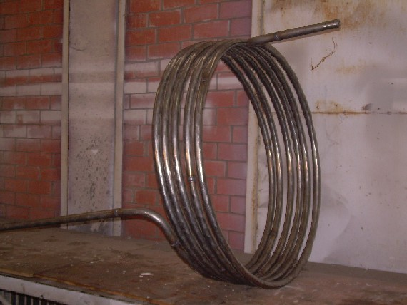
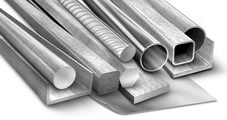

Многие элементы установок промышленных производств, например поверхности нагрева, пароперегреватели, водяные экономайзеры,
трубопроводы и др., являются конструкциями, состоящими из большого количества труб, имеющих изогнутую, зачастую очень сложную
форму. К таким объектам также можно отнести инженерные системы промышленных предприятий и жилищно-коммунальной сферы.
Гибка труб является ответственной технологической операцией, для которой нужно специально оборудование, во многом определяющей работоспособность и надежность эксплуатации таких установок и объектов, поэтому обычным токарным станком, в этом процессе не обойтись К примеру, трудоемкость гиба труб при изготовлении парогенератора достигает 10% от суммарной трудоемкости
всех операций.
Основное требование к гибке трубы заключается в сохранении неизменным проходного сечения в месте гиба. Обеспечить это сложно,
поскольку в процессе пластического деформирования имеет место изменение формы трубы в месте гиба, образуется овальная форма
сечения трубы, что приводит к уменьшению ее проходного сечения. Растяжение наружной стенки трубы в месте гиба вызывает ее утонение
и, как следствие, снижение прочности. Под действием сжимающих напряжений на внутренней части стенки трубы могут возникнуть складки
(гофры), которые являются недопустимыми дефектами.
Качество гибки в значительной мере зависит от механических свойств металла трубы, в первую очередь от его пластичности. Применяемый
в ряде случаев в процессе гибки подогрев (горячая гибка) имеет целью повышение пластичности металла.
Чем меньше радиус гиба, тем больше вероятность получения овальности и утончения стенки. При выборе способа гибки и режима процесса
исходят из того, чтобы овальность и утонение стенки не превышало допустимых значений.
Трубы можно гнуть различными способами, применяя различное оборудование, например, гидравлический пресс. Все способы гибки труб имеют целью достижение необходимого радиуса гиба, заданного угла
загиба и сохранение в процессе гибки проходного сечения трубы. Получение радиуса гиба и угла загиба относительно несложно. Значительно
сложнее достигается несплющивание трубы, т. е. допустимая овальность. Поэтому при оценке (или выборе) того или иного способа гибки этот
момент является решающим.
Ручную гибку труб с помощью несложных приспособлений применяют только на монтаже, в редких случаях - при подгонке отдельных трубных
элементов. Простейшим способом ручной гибки является гибка с наполнителем, например с набивкой трубы песком, который предохраняет
ее от сплющивания. Такой способ является малопроизводительным и не обеспечивает высокого качества.
В современном производстве применяются только способы машинной гибки, например, применяя листогиб. Принципы, положенные в основу различных трубогибочных
машин, излагаются ниже.
Гибка труб обкаткой. Этот способ находит применение при гибке труб с наружным диаметром до 50 мм и с радиусом гиба не менее двух
диаметров трубы.
Гибка труб наматыванием. Недостатком этого способа является наличие больших сил трения в самом технологическом процессе, что
снижает качество гиба. Способ гибки наматыванием довольно широко применяют при массовом изготовлении гнутых труб с наружным
диаметром от 18 до 426 мм. Гибку ведут в основном с подогревом труб. Холодная гибка этим способом в настоящее время из-за
недостаточно высокого качества гибов применяется ограниченно, а при изготовлении ответственных конструкций, например труб
поверхностей нагрева или трубных систем нефтехимической аппаратуры, практически полностью вытеснена более совершенными
способами бездорновой гибки.
Гибка труб с индукционным подогревом является одним из наиболее совершенных способов. Процесс гибки с нагревом труб токами
промышленной частоты эффективен при изготовлении трубных элементов с различными радиусами гиба и в различных плоскостях и находит
применение в единичном и мелкосерийном производстве. Способ характерен меньшим утонением стенки и меньшей овальностью трубы,
чем при других способах гибки.
Промышленность выпускает трубогибочные машины, предназначенные для гибки труб в широком диапазоне диаметров, основанные на
описанных выше способах; они бывают с пневматическим, механическим и гидравлическим приводом и могут иметь программное
управление. При единичном производстве часто применяют стационарные и переносные гидравлические прессы. Операцию гибки
выполняют в несколько проходов последовательно от участка к участку в штампе с соответствующим гибу профилем. Машины этого типа
обслуживаются системой гидравлических домкратов.

Изделия из металла
любой сложности
Телефоны в москве:
(495) 223-64-73
(495) 726-11-08
E-mail:
air2013@yandex.ru

Продукция
Производство
Шлифовка рулонов нержавеющих марок стали и специальных сплавов осуществляется на шлифовальных линиях.
Шлифовке могут быть подвергнуты рулоны в состоянии:
- горячекатаном травленом;
- после холодной прокатки;
- холоднокатаном термообработанном травленом.
При шлифовке металла обрабатываемого рулона зависит от характеристик агрегата.
Линия шлифовки предназначена для двухстороннего шлифования с целью улучшения качества поверхности и удаления дефектного поверхностного слоя. Обработка горячекатаной полосы позволяет повысить качество поверхности с шероховатости Rа от 20 до 10 мкм до шероховатости Rа от 1,25 до 0,63 мкм по ГОСТ 2789.
Процесс шлифовки нержавейки должен обеспечивать равномерный и качественный съем поверхностного слоя металла.
По качеству поверхности на агрегаты направляются рулоны имеющие дефекты на поверхности в виде царапин, задиров, потертостей, рябизны, мелких прокатные плены, либо с целью улучшения класса категории поверхности.
Сам процесс шлифовки нержавейки производится шлифовальными головками с абразивной лентой с различной зернистостью. Зернистость абразивной ленты снижается при последних проходах. На первых проходах зернистость при шлифовке холоднокатаного металла ниже, чем горячекатаного.
Определение величины съема металла при шлифовании рулонов производится путем контрольных замеров толщины полосы до и после операции шлифования.
Для получения более качественной поверхности шлифование нержавейки может производиться за большее количество пропусков.
Для качественного проведения процесса шлифования имеет значение величина натяжения обрабатываемой рулонной полосы в линии.
Если вы хотите добиться превосходного качества шлифовки, не следует торопиться. Существуют строго определенные стадии шлифовки нержавейки, перескакивать через которые нельзя, но можно сэкономить время и одновременно улучшить качество работы, если пользоваться правильными станками и инструментами.
Нержавеющая сталь стала доступна для бытового и коммерческого применения относительно недавно: при СССР большая часть запасов нержавеющей стали отдавалась на военные нужды: в гражданском применении можно было найти только мягкие и не очень качественные сорта стали.
Сейчас из нержавейки - металла с очень высокими прочностными и эксплуатационными характеристиками - изготавливают самые разнообразные предметы и товары. К примеру, торговое оборудование (в частности, разнообразные каркасы витрин и сборные стеллажи), предметы интерьера (на текущий момент очень популярна мебель с деталями из нержавеющей стали, а также различные интерьерные изделия из нержавейки: декоративные решетки для каминов, внутренние стальные лестницы и так далее), входные группы для офисов и части оформления фасадов - эти изделия из нержавейки выдерживают любую непогоду и служат очень долго. Также из металла выполняют различные элементы ландшафтного дизайна, а также разнообразные декоративные металлоконструкции.
Для этих изделий важны не только конструкционные качества, но и красивый внешний вид. Нержавеющая сталь может быть обработана под полированную поверхность, зеркальную или текстурированную, что позволяет добиться высокой эстетики каждого элемента оформления.
Разумеется из нержавейки делают и различные промышленные детали. Благодаря гигиеничности и стойкости к коррозии, изделия из нержавейки имеют широчайшее применение в химии, сантехнике и пищевой промышленности, где наиболее важно сопротивление деталей агрессивной среде. Нержавейка также отличается высокой термостойкостью, позволяющей использовать детали из неё в различных областях промышленности где велико температурное воздействие.
Для решения специальных задач (изготовления изделий из металла по спецзаказу) используются высококлассные сорта стали и современное оборудование. Вы можете заказать любое нужное вам изделие из нержавейки в нужном количестве - и получить быстрый и качественный результат.
Изделия из нержавейки можно встретить практически повсеместно: мебель и интерьерные детали в барах и ресторанах, различные детали в ванных и санузлах, в наружной рекламе и на кухне. Разумеется, в индустриальной сфере нержавеющую сталь также часто применяется: большинство станков и инструментов просто немыслимы без деталей из этого металла.
Design by Protey